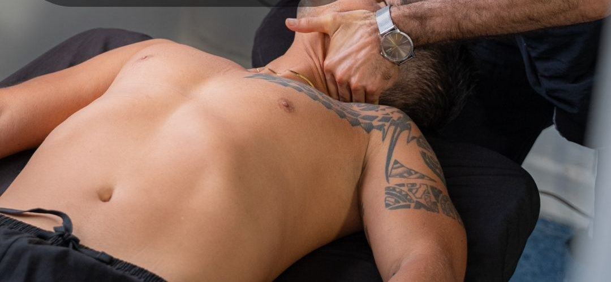

Empieza aquíValoración osteomuscular
Realizamos pruebas ortopédicas específicas para identificar la razón de tu problema. Analizamos los exámenes que ya tengas o te enviamos los que consideremos necesarios, y te orientamos hacia la mejor línea de tratamiento para tu dolencia.
Desde$65.000
Agendar